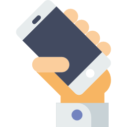
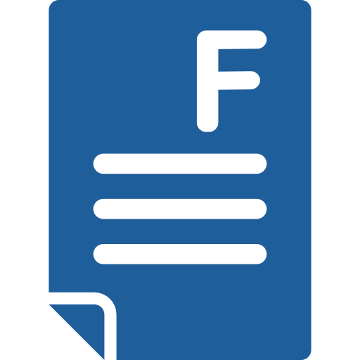
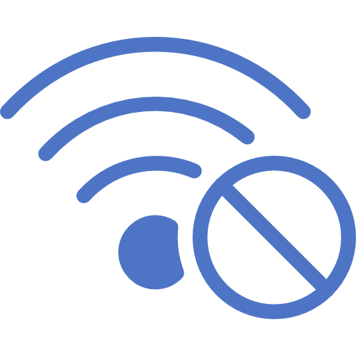

Avhengihet
Forskning viser at overbruk av sosiale medier kan
skape store avhengihetsproblemer, spesielt blant
ungdom. Grunnen til overbruken kan variere fra
person til person, fra å unnslippe problemer i hverdagen
til å føle en stor trang til å bli underholdt mye av tiden.
Dette problemet gjør at alt for mye tid i hverdagen går til
bruk av sosiale medier, som kan påvirke skolarbeid, søvn
og sosialt liv. Tidligere sjef for brukerveksten i Facebook
Chamath Palihapitiya
sier at likes og umiddelbare tlbakemeldinger
fôrer hjernens belønningssystem. Han mener at sosiale medier,
ikke bare Facebook, har alt for stor makt over ikke bare individer,
men hele samfunnet. Han nevner blandt annet hvordan valget i USA
ble manipulert. Palihapitiya har ingen konkret løsning på
problemet, men forteller at han tar selv pauser fra Facebook
og bruker det sosiale mediumet så lite som mulig.
Asosial
Sosiale medier har en tendens til å lure oss i å tro
at vi er sosiale og at vi er ”tilkoblet” til de andre
menneskene rundt oss. Sannheten er at vi er mindre
sosiale nå enn det vi var fra noen år tilbake.
Sosiale medier tar bort noe av grunnen man har for
å gå ut å sosialisere, når man enkelt bare kan ta
opp mobilen å føle seg ”tilkoblet” med en gang. Man
har ofte også enormt mange flere venner på sosiale
medier enn i virkeligheten som kan gi en falsk følelse
av man er mer sosial enn det man egentlig er. I en
amerikansk undersøkelse kommer det fram at flere svarer
ja på spørsmål som "jeg føler at folk knapt kjenner meg"
og "jeg føler at folk er rundt meg, men ikke sammen med
meg".
Sjalusi
Sosiale medier gjør at man kan få en innsikt i
andres liv og hva de gjør nesten hele tiden.
Dette kan være negativt, fordi man lett kan begynne
å sammenligne seg selv og sitt liv med andres.
Spesielt på sosiale medier legger man som oftest
ut bare de beste sidene av seg selv, noe som gjør
at man selv kan føle seg ”dårligere” enn andre
mennesker. Dette bygger på ensomhetsfølelsen når man
i større grad får greie på fester man går glipp av eller
bursdager man ikke ble invitert til. Forskning viser at
vi blir ulykkelige og stresset. Sosiale medier påvirker
livskvaliteten vår. Vi føler en stadig større tomhet og
kjedsomhet.
Karaktertrekk ved avhengighet av sosiale nettverk
Økende internettbruk gjør stadig flere avhengige
av å logge seg på nettet. Er du en av dem? hvis du
kjenner deg igjen av noen av punktene under kan det
tyde på at du bruker litt for mye tid på internett.
- Det utvikles en idé om at det å være online er den eneste måten man blir lagt merke til.
- Å lengte etter en siste postering eller oppdatering før man legger seg.
- Avbrytelser av nødvendige oppgaver på jobben eller hjemme for å sjekke etter oppdateringer på sosiale nettverk.
- Å lyve eller være villedende når det gjelder hvor mye tid man bruker på sosiale nettverk.
- Søvntap på grunn av tid tilbrakt på sosiale nettverk.
- Du føler at du må være stadig lengre på nettet for å bli tilfredsstilt.
- Irritabilitet og rastløshet når man forsøker å redusere eller stoppe internettbruk.


Hvordan få hjelp hvis du er avhengig
Ofte så hjelper det bare med å innse at du bruker litt
for mye tid på internett, og med dette kan du bevisst
kutte ned internettbruken ved å tvinge deg selv til å
legge bort pc-en/mobilen etc. Men for andre som er
virkelig avhengig av internett, så er ikke viljestyrken
like høy som hos andre, og de kan føle at det er umulig
å legge fra seg skjermene. Da kan det være lurt å oppsøke
profesjonell hjelp. Men det finnes også ting man kan gjøre
selv for å kutte ned bruken:
- Slette appene du bruker for mye tid på. (med mindre du bruker det til skole eller jobb-relaterte ting)
- Slå av internettet hjemme når det ikke er nødvendig.
- Slå av notifikasjoner på mobil og pc (dette hindrer deg i å gå på nettet når du ellers ikke bruker det)
- Er problemet veldig stort kan det også være en tanke å besøke en terapist.